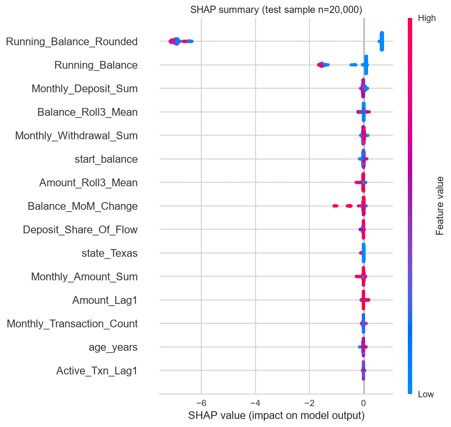
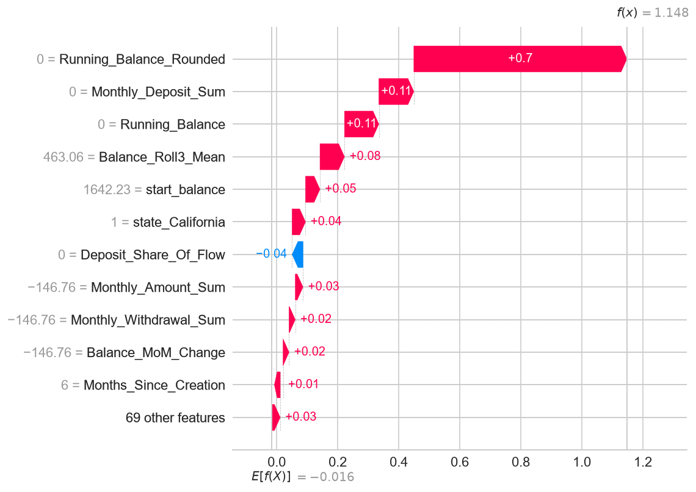
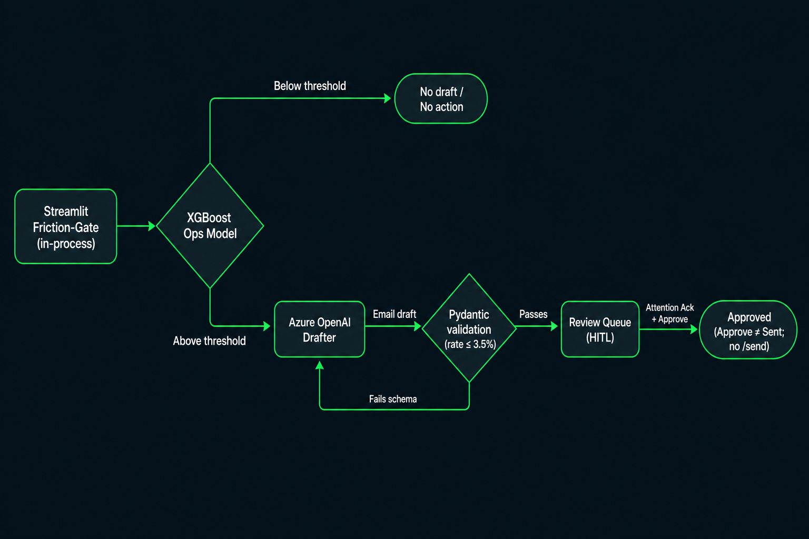
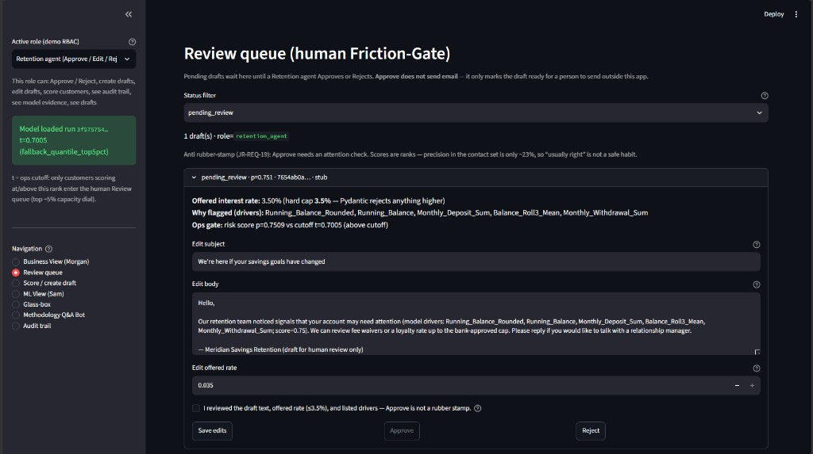
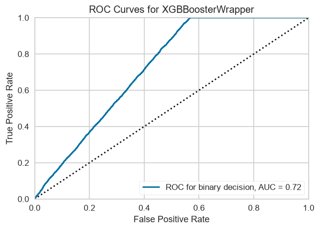
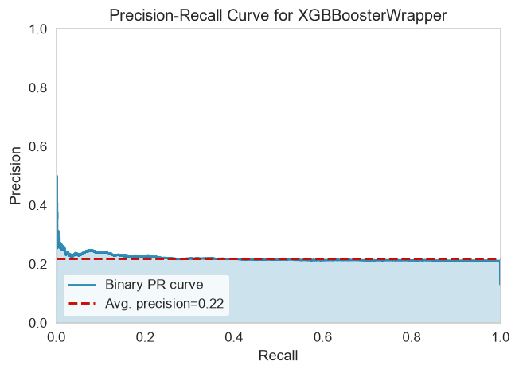
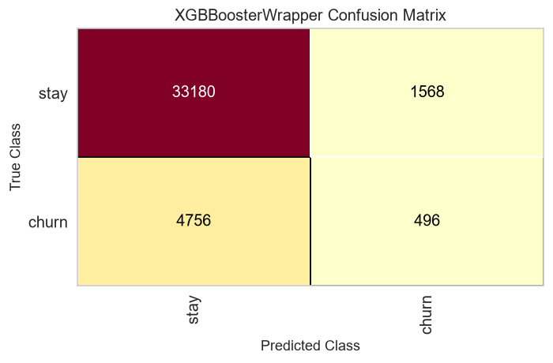

Project: InnovatorProjectDF14
Date: 2026-09-24
Primary Stakeholders: Morgan (Product), Sam (Data Science), Jamie (Risk & Compliance)
Model version: 1.1.0-sprint3-serving · MLflow ops run 3f575754ae9a42c5a21ea5e476c0af37
Meridian Savings faces approximately $7.3M in historical Assets Under Management (AUM) at risk from silent retail savings churn. This project delivers a leakage-safe ranking model plus a human-in-the-loop GenAI retention workflow so Operations can prioritise outbound contact before balances drain.
What we built: An XGBoost classifier that ranks customer-months by next-month churn risk, served via FastAPI (Models/ops/) and consumed by the Friction-Gate Streamlit application. For customers above the operational contact threshold (p ≥ 0.701, top ~5%), the currently configured Azure OpenAI deployment (gpt-5-mini, which replaced gpt-4o-mini in September 2026) drafts personalised retention emails under strict guardrails. A RAG Q&A bot grounds methodology answers in this report and related documentation.
Headline performance (test window 2017-09 → 2020-04): PR-AUC 0.219 vs heuristic 0.151; ROC-AUC 0.723 vs 0.551. At the ops cut, test precision is 22.9% with 20,127 false positives — a 12× reduction versus a max-F1 threshold that would flood the review queue.
Key recommendation: Hand over the portable Models/ops/ bundle and Friction-Gate UI to Retention Operations. Keep the ops cut at t = 0.70055 (validation top-5% quantile). Do not lower the threshold to chase recall without expanding human review capacity. Azure Container Apps hosting is proven but not standing: azd up deployed and verified the API on 2026-09-24, and it was then torn down, so there is no live ACA URL in this handover.
Major caveats (read before use):
scale_pos_weight; a score of 0.75 means “very high in the portfolio,” not a 75% actuarial churn chance.gone_this_month heuristic on PR-AUC and ROC-AUC, plus a reviewable contact queue — not the old AUC target.azd project (azure.yaml, infra/*.bicep, one replica) deployed the API to Azure Container Apps and passed live checks (Azure drafts, hybrid RAG, RBAC). It was then removed with azd down to stop charges, so there is no standing URL. Redeploy with azd up (ADR 016).This system informs outbound retention prioritisation: which retail savings customers are most likely to enter next-month left-looking churn (rounded balance $0 and inactive). For the highest-ranked cohort, it generates draft retention emails (competitive rates capped at 3.5%) for human review — never autonomous send.
| Item | Detail |
|---|---|
| Portfolio | US retail savings accounts, monthly customer×month grain |
| Prediction window | Features through month-end t; label = churn state in month t+1 (ADR 004) |
| Scoring population | Customer-months with Months_Since_Creation ≥ 2 (new-account grace) |
| Submission horizon | Predict June 2020 churn for accounts active as of 2020-05-31 (StartingFiles/banking-churn-genai-project.md) |
| Intended users | Retention agents (Friction-Gate queue), Morgan (portfolio/at-risk views), Sam (ML audit via MLflow/SHAP), Jamie (fairness + HITL evidence) |
/send endpoint; Approved ≠ Sent (ADR 003).Meridian Savings offers a retail savings product aimed at middle-income professionals. Interest accrues monthly only when the account shows a net positive change after deposits and withdrawals — so consistent deposit behaviour matters to both the customer and the bank’s liquidity buffer. Silent churn (balance drain to near-zero with inactivity) removes funding capacity; the historical AUM-at-risk baseline locked in Sprint 1 is ≈ $7.27M / ~$7.3M.
| Source | Role |
|---|---|
StartingFiles/customers_tm1_e.csv |
Demographics, start_balance, creation_date |
StartingFiles/transactions_tm1_e.csv |
Cash movements aggregated to month-end |
Raw extracts span 2007-01-31 to 2020-05-31. Sprint 1 aggregated transactions to a monthly panel from March 2007 to April 2020, exported as Data/processed/training_data.csv.
Running_Balance at first left-looking exit sums to ≈ $7.27M (Sprint 1 EDA — replaces earlier placeholder figures)Churn-shaped behaviour is rare (~1 in 9 eligible months). Age-band churn rates cluster tightly (≈ 11.0–11.9% across bands). Geographic variation exists but is modest among high-volume states (e.g. Texas 13.43%, California 10.36% on eligible rows — Sprint 1 §9 crosstabs). The portfolio skews toward a mature retail demographic (age_years in the feature set).
Approximately 8.15% of raw transaction rows are system $0 placeholders (quiet months padded with zero-amount entries). This materially affects how inactivity must be measured — raw transaction counts alone cannot identify dormant months.
Context for Morgan: Heavy class imbalance means accuracy is misleading (an always-negative classifier reaches ~87% accuracy while catching zero churners). The business value is in ranking the right customers into a finite review queue, not maximising headline accuracy.
Data integrity and leakage prevention were the highest priorities (Sprint 1). All steps are reproducible from Code/Sprint1/01_data_integrity_and_eda.ipynb and Code/Sprint1/02_feature_engineering.ipynb.
| Issue | Finding | Resolution |
|---|---|---|
| $0 placeholder transactions | 523,679 / 6,421,943 rows (8.15%) | Exclude from activity; use Monthly_Active_Txn_Count (non-zero amounts only) |
Null start_balance |
3 customers | Sam-confirmed fillna(0) |
| Extreme balance outliers | ±1e10 present | Retained; XGBoost partitions without destructive scaling |
Active_Txn_Lag3 NaNs |
~138k early-tenure rows | Retained; tree model handles missing natively |
| Invalid / duplicate checks | Integrity checklist §2.1 | Documented pass/fail triage; 100% 1:1 account–customer mapping |
| High-balance dormancy | ~53k streaks min balance ≥ $1,000 | Not labelled churn — AUM preserved |
After stakeholder workshops with Sam (2026-07-10), churn at observation month t (Months_Since_Creation ≥ 2) is:
Is_Churned = 1 iff month t+1 has
Running_Balance_Rounded == 0
AND Monthly_Active_Txn_Count == 0
One-month forward label chosen over two-month confirmation (~2.6% positive rate) because most near-zero inactive streaks are length 1 and Operations needs actionable lead time.
gone_this_month matched Is_Churned at 81.75% before the forward shift — confirming the heuristic aligns with the locked label.customer_id, raw Month strings (memorisation risk).state one-hot fit on train split only; 24 numeric behavioural/demographic columns → 80 model inputs after encoding (Models/ops/serving_meta.json).Schema validation: py -3.13 .cursor/skills/validate-csv-schema/scripts/validate_schema.py against StartingFiles/*.csv.
| Detail | |
|---|---|
| Inputs | 80 features: OHE state (55 levels + sentinels), balances, 3-month rolls, deposit/withdrawal flows, inactivity streaks, age_years, tenure |
| Output | Continuous score in [0, 1] from XGBoost binary:logistic — used as a ranking score |
| Population scored | Eligible customer-months (Months_Since_Creation ≥ 2); production submission targets active accounts at 2020-05-31 |
| Ops flag | flagged = (score ≥ 0.701) per Models/ops/serving_meta.json |
Algorithm: XGBoost (binary:logistic) — chosen over deep tabular models and logistic regression because it (1) handles NaNs in lag features without imputation, (2) tolerates balance outliers without scaling, and (3) integrates with SHAP for board-defensible explanations (Jamie “Glass-Box” requirement).
Temporal split (no shuffle):
| Split | Months | Rows | Positive rate |
|---|---|---|---|
| Fit | 2007-03 → 2016-08 | 1,568,631 | 11.21% |
| Validation | 2016-09 → 2017-08 | 189,114 | 12.58% |
| Test | 2017-09 → 2020-04 | 505,863 | 13.15% |
Hyperparameter approach: Fixed tree hyperparameters with early stopping on validation log-loss (not exhaustive search — documented recipe from Sprint 2 notebook):
| Parameter | Value |
|---|---|
max_depth |
6 |
learning_rate |
0.08 |
subsample / colsample_bytree |
0.8 |
n_estimators (max) |
400 |
early_stopping_rounds |
40 |
| Best iteration | 99 |
| Class imbalance | scale_pos_weight = n_negative / n_positive |
MLOps: Experiments logged to MLflow (SQLite mlflow.db, gitignored). Ranking run 7134cee0… (max-F1 threshold); ops run 3f575754ae9a42c5a21ea5e476c0af37 (top-5% threshold) registered for serving export to Models/ops/.
scale_pos_weight inflates raw scores. Do not interpret 0.70 as a 70% churn probability without separate calibration (calibration was not implemented; it needs a separate calibration slice and validation).California vs CALIFORNIA) inflate cardinality — documented technical debt, not a fairness fix.Global drivers (SHAP mean |value|, test sample):
Running_Balance_Rounded (3.004) Running_Balance (0.640) Monthly_Deposit_Sum (0.022) Balance_Roll3_Mean (0.022) Monthly_Withdrawal_Sum (0.015)Figure 1 — SHAP summary: global feature impact on churn score. Balance-drain mechanics dominate; demographics are not primary drivers.

Context for Sam: Driver hierarchy is consistent with ADR 004 (next-month zero balance + inactivity). Sprint 1 Gini leak screen showed top feature importance ≪ 0.50 — no single feature “memorises” the label.
Local explanations: Per-customer waterfall plots decompose a prediction into positive (red) and negative (blue) contributions. At serve time the API computes the same decomposition for any customer on request: exact TreeSHAP from the served XGBoost booster (pred_contribs), in log-odds, grouped back to the 24 raw features, and verified to sum to the customer's score. Sam's Prediction browser page shows it as a bar chart for the selected customer (§6.3). The Friction-Gate Glass-box page still surfaces the frozen global SHAP metadata for audit.
Figure 2 — SHAP waterfall for a high-risk customer: local evidence for retention agents.

Portable serving bundle — Models/ops/ (committed, single source of truth):
| Artifact | Purpose |
|---|---|
booster.json |
Frozen XGBoost model |
preprocessor.joblib |
Train-fitted OHE + column order |
serving_meta.json |
Ops threshold, feature names, MLflow run provenance |
Figure 3 — System flow: scoring API, SQLite draft queue, Friction-Gate UI, optional Azure GenAI.

FastAPI (src/serving/app.py) — key endpoints:
| Method | Path | Role |
|---|---|---|
| GET | /health, /docs |
Health + OpenAPI |
| POST | /score |
Score features; returns probability + flagged at ops cut |
| POST/GET/PATCH | /drafts |
Draft queue (SQLite WAL) |
| GET | /audit/events |
Demo audit trail |
| GET | /predictions |
Prediction browser: cohort re-scored server-side, ranked, filterable |
| GET / POST | /predictions/{id}/explain, /explain |
Per-customer TreeSHAP (log-odds, grouped to raw features) |
| — | /send |
Absent by design (ADR 003) |
Authentication (demo): X-Demo-Role header required on mutating routes; Compliance viewer receives 403 on Approve (ADR 007).
Docker: Dockerfile + docker-compose.yml run the FastAPI service only (Streamlit stays on the host, ADR 008), with a named volume for the SQLite draft queue and a /health HEALTHCHECK. The image installs pinned serving-only dependencies (requirements.serving.txt, same versions that exported Models/ops/). Local build + smoke test passed on 2026-09-24 (checklist). An Azure Developer CLI project (azure.yaml + infra/main.bicep, infra/resources.bicep) now describes the Azure Container Apps target: one replica (min = max = 1, ADR 008), image built in Azure Container Registry, pulled with a managed identity, Azure OpenAI key read from the existing AI Services resource at deploy time, ingress limited to one IP range, and every request must carry a secret X-API-Key (ADR 016). Deployed and verified live on 2026-09-24, then torn down with azd down; there is no standing URL.
From repository root (cmd.exe, AppLocker-safe py -3.13 -m …):
set PYTHONPATH=%CD%
py -3.13 -m pytest tests -q
py -3.13 -m uvicorn src.serving.app:app
py -3.13 -m streamlit run Code\Sprint3\friction_gate_app.py
Alternatively, run the API in Docker with docker compose up -d --build, then start Streamlit as above (the UI calls the API on port 8000).
Automated regression: 127 tests passed (full tests/ suite) as of 2026-09-24.
Figure 4 — Friction-Gate dashboard: business metrics, review queue, and role-gated actions.

| Page | Audience | Capability |
|---|---|---|
| Business View (Morgan) | Product | Portfolio KPIs; High / Medium / Low risk buckets (see below) |
| Score / create draft | Retention | Score customer; create draft only if flagged |
| Review queue | Retention | Approve / Edit / Reject with attention acknowledgement (attention_ack=true, JR-REQ-19) |
| ML View (Sam) | Data Science | Interactive What-If: start from a demo customer, move four features (including Running_Balance, the top SHAP driver) and re-score live, with the edited row's per-customer SHAP; precision-recall and ROC curves |
| Prediction browser (Sam) | Data Science, Compliance | Every customer in the cohort ranked by score, filterable (flagged only, minimum probability, id); selecting a row shows that customer's SHAP breakdown. The cohort (Data/processed/prediction_cohort.csv, one month of training_data.csv) is built locally with Code/Sprint5/build_prediction_cohort.py; without it the page lists the two demo fixtures and says so |
| Glass-box | Compliance | Frozen ops threshold + SHAP drivers; demo role cannot Approve |
| Audit trail | Compliance | Immutable status transitions (X-Demo-Role Glass-Box RBAC) |
| Methodology Q&A Bot | All | RAG over project documentation |
Business-readable risk buckets (brief requirement): Morgan’s view labels cohorts High / Medium / Low rather than raw probabilities. High (Tailored) maps to the ops contact policy (p ≥ 0.701) and is the only cohort that enters the Friction-Gate draft queue. Medium/Low are UI cohort labels for portfolio communication; outbound GenAI drafts are capacity-gated at the High cut only — there is still no /send and no autonomous mailer.
Below-threshold customers (e.g. score ≈ 0.21) are not flagged — the capacity gate refuses GenAI side effects.
Retention email drafting
| Control | Implementation |
|---|---|
| Prompt-as-code | Versioned src/genai/prompts/retention_draft.prompty supplies the system and user messages; the call requests a JSON object response. Token limits are set per model by chat_limit_params() (max_completion_tokens for reasoning deployments such as gpt-5-mini, which reject max_tokens and custom temperature) |
| ZDR | PII scrubber strips emails, phones, SSN/long-digit patterns, DOB-like fields before any LLM call; blocked keys dropped from context |
| Hallucination bounds | Prompt forbids inventing PII/names and rates above cap; output must be JSON with keys subject, body, offered_interest_rate, drivers |
| Pydantic hard stop | offered_interest_rate ≤ 0.035 validated on create and PATCH (ADR 002) and numeric percentage claims in subject/body must not exceed the validated offer |
| Server-side re-score | POST /drafts re-scores from raw features and rejects client-supplied scores (extra="forbid"); the Streamlit UI calls this API for every score, draft and decision, so it cannot bypass t ≈ 0.70055. Only on AppLocker machines with FRICTION_GATE_MODE=inprocess does it drive the same app without a socket (ADR 006 follow-on) |
| Path cascade | stub (offline demo) → azure (the configured AZURE_OPENAI_DEPLOYMENT, currently gpt-5-mini; it replaced gpt-4o-mini in September 2026) when configured → stub_fallback on Azure/prompty failure (drafter_source recorded) |
| Telemetry | Stdlib logs prompt_tokens / completion_tokens / total_tokens per completion (ADR 013); retries on 429/5xx via Tenacity |
| HITL | Status pending_review → human Approve/Edit/Reject; Approved ≠ Sent; no /send; terminal drafts immutable; attention_ack required |
Stakeholders can inspect the exact prompt file and pytest evidence (tests/genai/test_pii_scrubber.py, serving rate-cap tests) rather than trusting slide claims.
| Aspect | Detail |
|---|---|
| Engine | src/genai/rag_engine.py — pure Python; no Chroma/FAISS (ADR 010 / AppLocker) |
| Corpus | Chunked markdown grounded on Docs/Final_Report_Official.md (Streamlit Methodology tab) |
| Chunking | Split on any ATX header (#–######), then paragraph-pack to ≤1200 chars (avoids whole-chapter “chunks”) |
| Retrieval | Hybrid (ADR 015): Okapi BM25 and, when Azure is configured, text-embedding-3-large cosine similarity are ranked separately and fused with Reciprocal Rank Fusion; the same chat deployment then reranks the candidate pool in one call. top_k=3 chunks go into the answer prompt. Offline, BM25 alone is used. Not a purpose-built cross-encoder |
| Cache | Disk JSON Data/processed/rag_index_cache.json keyed by source mtime + embedding model + schema_version (invalidates on edit or chunker upgrade) |
| Generation | Azure chat answering only from retrieved context; safe error string if Azure unavailable |
| Limits | In-memory / disk index sized for report-scale corpus — not a bank-wide knowledge base; expand corpus only with re-index |
| Resilience | Tenacity backoff + token usage logs (ADR 013) |
Friction controls (Jamie): Drafts remain pending_review until human Approve; Approved ≠ Sent; terminal states immutable; demo Glass-Box RBAC (ADR 007) — Compliance viewer is read-only.
With 11.8% baseline churn, accuracy rewards “predict nobody churns.” PR-AUC (area under precision–recall) is the primary metric because Operations cares about precision among flagged customers at a fixed contact budget. ROC-AUC is reported secondary. Both must beat the gone_this_month heuristic — a real baseline that mirrors ADR 004 mechanics.
| Model | PR-AUC | ROC-AUC |
|---|---|---|
| Always-negative | 0.132 | n/a |
gone_this_month heuristic |
0.151 | 0.551 |
| XGBoost | 0.219 | 0.723 |
Figure 5 — ROC curve: discrimination vs heuristic on chronological test split.

Figure 6 — Precision–recall curve: primary ranking metric for imbalanced churn.

Ranking metrics are unchanged across threshold policies — only the operating point moves.
We report calibration honestly: scores are ranks, not calibrated probabilities. Training used scale_pos_weight, which shifts the score distribution upward relative to the 11.8% base rate. A score of 0.70 means “top of the portfolio ranking,” not a 70% actuarial chance of churn.
Brier score was not computed and is not reported here. The brief lists Brier as a reasonable default for probability quality; we deliberately prioritised PR-AUC / ROC-AUC ranking and a capacity-limited operating point because Friction-Gate selects a top-k queue. Applying Platt scaling or isotonic regression was not shipped — sigmoid/Platt calibration preserves ranking, while isotonic calibration can introduce ties. Calibration needs separate validation before probability claims are made. If Sam later requires actuarial probabilities (e.g. for expected-loss pricing), calibration becomes a follow-on workstream, not a silent claim of this release.
Two policies on the same frozen test scores:
| Policy | Run ID | Rule | Threshold | Test precision | Test recall | Test FP | Test TP |
|---|---|---|---|---|---|---|---|
| Max F1 (first cut) | 7134cee0… |
argmax F1 on val | 0.475 | 0.211 | 0.9997 | 248,778 | 66,485 |
| Ops (shipped) | 3f575754… |
val top-5% quantile | 0.70055 | 0.229 | 0.090 | 20,127 | 5,964 |
Context for Morgan: Max-F1 optimises statistical recall but produces an unreviewable queue. The top-5% dial trades recall for 12× fewer false positives while slightly improving precision — the only policy compatible with finite agent capacity. A 40% precision floor at 5% contact was mathematically infeasible on validation (precision plateaus ~0.23).
Figure 7 — Confusion matrix at ops threshold: reviewable false-positive volume.

Meridian’s fairness posture is measurement plus governance, not a claim of zero disparity. Because the model triggers a positive intervention (retention offer) rather than denial of service, our objective is to constrain unsupervised harm, explain behaviour, and disclose residual gaps for Risk oversight — without deploying an automated fairness remediator we did not validate.
Protocol: Fairlearn Equalized Odds difference (primary fairness metric — not Demographic Parity as the headline claim) on a 100,000-row test subsample at the same ops threshold (t = 0.70055) used in serving — not at the max-F1 cut where near-universal recall distorts slice metrics. Selection-rate gap by age is reported as a secondary residual, not as the fairness gate.
Results (filtered, min group n ≥ 500) — residual gaps, not “cleared”:
| Slice | Groups kept | Equalized Odds diff | Notes |
|---|---|---|---|
| Age (6 bands) | 6 / 6 | ≈ 0.156 | Selection-rate gap ≈ 0.099 (residual) |
| State | 38 / 55 | ≈ 0.318 | 3,548 sparse rows excluded (residual) |
An earlier unfiltered state EOD of 1.0 was rejected as a sparse-slice artifact — Jamie’s register requires honest group sizes, not alarming noise.
Six prevention layers (how discrimination is constrained):
t ≈ 0.701 so board numbers match the contact policy customers experience (Docs/Sprint2/reports/fairlearn_equalized_odds.json)./send, Compliance role cannot Approve (ADR 003, ADR 007), attention acknowledgement before Approve (JR-REQ-19).What we did not claim: no Fairlearn ThresholdOptimizer, no production EOD blocker, demo RBAC ≠ Entra ID, and ZDR scrubbing addresses PII to the LLM — a separate control from demographic parity.
Drift monitoring: Evidently train-vs-test report at Docs/Sprint2/data_drift_report.html (Morgan macro/context).
| Document | Path |
|---|---|
| Architecture Decision Records | Docs/Architecture/ADRs/ (002, 003, 004, 005, 007, 008, 010, 013) |
| Data Dictionary | Docs/Data/Data_Dictionary.md |
| Model card | Docs/Model_Card_Template.md |
| Ops run summary | Docs/Sprint2/reports/sprint2_run_summary_v2.json |
| Fairness narrative | Docs/Sprint5/fairness_anti_discrimination_narrative.md |
| Demo runbook | Docs/Sprint4/demo_runbook.md |
| GenAI prompt | src/genai/prompts/retention_draft.prompty |
Source: Docs/Sprint2/reports/sprint2_run_summary_v2.json · run 3f575754ae9a42c5a21ea5e476c0af37
{
"test_window": { "start": "2017-09", "end": "2020-04", "rows": 505863 },
"threshold_rule": "fallback_quantile_top5pct",
"threshold": 0.700547993183136,
"metrics": {
"precision": 0.2285845693917443,
"recall": 0.08968151333794472,
"f1": 0.128821833183934,
"roc_auc": 0.7234409965641873,
"pr_auc": 0.21892221597538156,
"true_positives": 5964,
"false_positives": 20127,
"false_negatives": 60538,
"true_negatives": 419234
}
}
Max F1 (7134cee0…) |
Ops top-5% (3f575754…) |
|
|---|---|---|
| Threshold | 0.475 | 0.701 |
| Test FP | 248,778 | 20,127 |
| Test TP | 66,485 | 5,964 |
| Test precision | 0.211 | 0.229 |
| Test recall | 0.9997 | 0.090 |
| Control | Evidence |
|---|---|
| Rate cap ≤ 3.5% | Pydantic validation tests in tests/serving |
| ZDR / PII scrub | tests/genai/test_pii_scrubber.py |
No /send |
OpenAPI + tests/serving route assertions |
| HITL / attention ack | JR-REQ-19 UI gate + API tests |
| Azure retry / token log | tests/genai/test_azure_retries.py, test_rag_engine.py (ADR 013) |
| RAG grounding | Retrieve + cache tests; offline TF-IDF fallback |
| Regression suite | 47 passed (pytest tests/serving tests/genai -q, 2026-07-17) |
Prompts and responses are structured (JSON draft schema); stub path allows full demo without live Azure. When Azure is configured, drafts, RAG answers and reranking use the configured chat deployment (currently gpt-5-mini), and RAG retrieval embeds with text-embedding-3-large.
| Item | Notes |
|---|---|
| SQLite on Azure | Requires shared volume + maxReplicas: 1; migrate to PostgreSQL for HA multi-node |
| RAG index | Disk JSON cache (Data/processed/rag_index_cache.json); vector DB if corpus grows |
| ACA deployment | Scaffold only — WS-2 open pending hosting confirm |
| Submission CSV | Shipped: Code/Sprint3/create_submission.py → submission_df14.csv (17,599 rows; ADR 014); probabilities, not ops-cut labels |
| PDF export | Assessor copy: scripts/export_document_pack.py renders this markdown to Docs/Final_Report_Official_print.html and churn_report_df14.pdf, and refreshes the teaching-app and interview-prep copies |